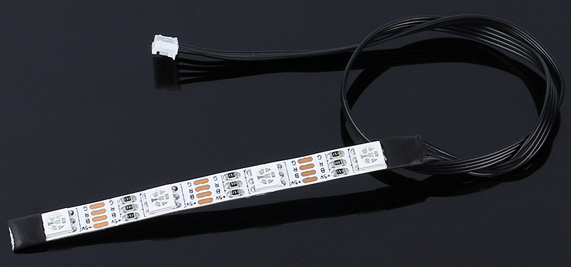
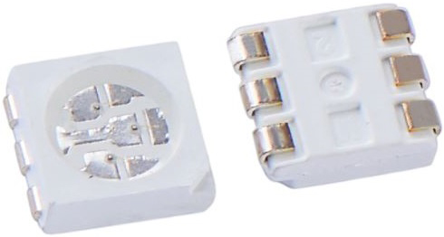
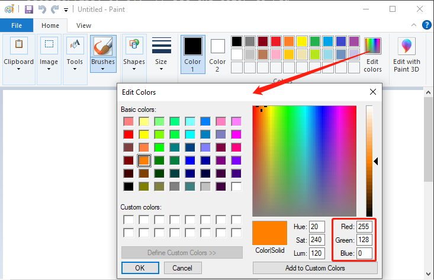

Note
Hello, welcome to the SunFounder Raspberry Pi & Arduino & ESP32 Enthusiasts Community on Facebook! Dive deeper into Raspberry Pi, Arduino, and ESP32 with fellow enthusiasts.
Why Join?
Expert Support: Solve post-sale issues and technical challenges with help from our community and team.
Learn & Share: Exchange tips and tutorials to enhance your skills.
Exclusive Previews: Get early access to new product announcements and sneak peeks.
Special Discounts: Enjoy exclusive discounts on our newest products.
Festive Promotions and Giveaways: Take part in giveaways and holiday promotions.
👉 Ready to explore and create with us? Click [here] and join today!
Lesson 9: Lighting the Way with RGB LED Strips
In our journey so far, we’ve transformed our Mars Rover into a smart explorer, capable of skilfully manoeuvring around obstacles. It’s become quite adept at navigating the Mars-like terrains we’ve set up for it.
But, what if we could add a bit of flair to its practicality? Let’s give our Rover the ability to express itself through a spectacle of colors and light. We’re talking about incorporating RGB LED strips - a cool feature that would allow our Rover to illuminate its path, even in the darkest conditions.
Picture this - the Rover leaves a trail of color-coded signals, making it easier for us to understand its moves. A green glow when it’s on the go, a stern red when it halts, or a flashy yellow during those swift turns. It could even light up in an array of colors just for the sheer fun of it!
Our goal in this lesson is to understand the principles of RGB LED strips, learn to control their color and brightness, and then synchronize this with the Rover’s movements. By the end, our Mars Rover will be more than a machine. It’ll be a luminous, color-changing entity, leading the way in the vast Martian landscape!
Note
If you are learning this course after fully assembling the GalaxyRVR, you need to move this switch to the right before uploading the code.

Objective
Understand the working principles and applications of RGB LED strips.
Learn how to use Arduino programming to control the color and brightness of RGB LED strips.
Practice installing and using RGB LED strips on the Mars Rover model as indicators.
Materials Needed
RGB LED Strips (each strip has 8 RGB LEDs, a total of two strips)
Basic tools and accessories (e.g. screwdriver, screws, wires etc.)
Mars Rover Model (Equipped with rocker-bogie system, main boards, motors, obstacle avoidance module, ultrasonic module)
USB Cable
Arduino IDE
Computer
Course Steps
Step 1: Install the RGB LED Strips on the Mars Rover
Now, fix the two RGB light strips to the bottom sides of the car. They are controlled by a single set of pins, so there is no need to differentiate during the wiring process.
Step 2: Explore the Magic of Light with RGB LED Strips
Do you remember the last time you saw a rainbow? How it made the sky colorful with seven vibrant hues? How would you like to create your own rainbow, right here in our little Martian rover? Let’s dive into the magic of light with RGB LED strips!

You might notice that our RGB LED Strip has four pins labeled as follows:
+5V: This is the common “positive” end or the “anode” of the three tiny light bulbs (LEDs) inside our strip. It needs to connect to DC 5V, a kind of electric juice that powers our tiny bulbs!
B: This is the “negative” end or the “cathode” of the blue LED.
R: This is the “cathode” of the red LED.
G: This is the “cathode” of the green LED.

Do you remember the three primary colors - Red, Blue, and Green - that we learned in our art class? Just like an artist mixes these colors on his palette to create new shades, our strip contains 4 “5050” LEDs that can mix these primary colors to create virtually any color! Each “5050” LED is like a tiny art studio that houses these three colored bulbs.

These tiny art studios are then connected in a smart way on a flexible circuit board - kind of like a mini electric highway! The “positive” ends of all LEDs (anodes) are connected together, while the “negative” ends (cathodes) are connected to their corresponding color lanes (G to G, R to R, B to B).

And the coolest part? With our command, all the LEDs on this strip can change their colors at once! It’s like having our own light orchestra at the tip of our fingers!
So let’s get ready to play some light music! In our next step, we’ll learn how to control these LEDs to display the colors we want. It will be like conducting a symphony of light!
Step 3: Light Up the Show - Coding to Control the RGB LED Strips
We’ve stepped into the realm of colors, it’s time to bring our Mars Rover to life. Brace yourself to paint the darkness with a spectrum of colors using RGB LED strips. Think of this as a chance to transform your Mars Rover into a mobile disco party!
Before we dive into the fun part, let’s understand that even though we have two LED strips, they are both controlled by the same set of pins. Think of it as having two dazzling dancers moving in perfect synchronization!

It’s time to summon our coding magic. We’re going to initiate our pins with the Arduino code.
#include <SoftPWM.h> // Define the pin numbers for the RGB strips const int bluePin = 11; const int redPin = 12; const int greenPin = 13;
With our pins in place, we’ll now use the
SoftPWMSet()function to control these pins. To make the RGB strip display red, we turn the red LED on and switch off the others.void setup() { // Initialize software-based PWM on all pins SoftPWMBegin(); } void loop() { // Set the color to red by turning the red LED on and the others off SoftPWMSet(redPin, 255); // 255 is the maximum brightness SoftPWMSet(greenPin, 0); // 0 is off SoftPWMSet(bluePin, 0); // 0 is off delay(1000); // Wait for 1 second }
In the above code, we’ve only demonstrated how to display a single color.
If we were to showcase a variety of colors using this method, the code could become quite cumbersome. Therefore, to make our code more concise and maintainable, we can create a function to assign PWM values to the three pins. Then, within the loop(), we can easily set a multitude of colors.
After uploading the code to your R3 board, you may find that the orange and yellow colors seem a bit off. This is because the red LED on the strip is relatively dim compared to the other two LEDs. Thus, you’ll need to introduce offset values in your code to correct this color discrepancy.
Now, the RGB LED strip should be able to display the correct colors. If you still notice discrepancies, you can manually adjust the values of R_OFFSET, G_OFFSET, and B_OFFSET.
Feel free to experiment and display any color of your choosing on the LED strip. All you need to do is fill in the RGB values for the color you want.
Here’s a tip: You can use the Paint tool on your computer to determine the RGB values of your desired color.

Now that we’ve mastered the art of color-setting, in the next step, we’ll integrate these dazzling displays with the movements of the Mars Rover. Exciting times ahead!
Step 4: Move the Rover with Color Indication
Now, we’ll add color indications to the movements of the Mars Rover. For instance, we can use green for forward, red for backward, and yellow for turning left or right.
To do this, we will add a control mechanism in our code that sets the color of the LED strip based on the Rover’s movement. This will involve modifying our Rover control code to include our color control functions.
Let’s see an example of how we can do this:
Within the loop() function, we commanded the Rover to perform a series of actions by calling different functions.
Each action had its corresponding color display - green for moving forward, red for moving backward, and yellow for turning.
This color display feature was brought to life using the setColor() function, which manipulated the brightness of
each RGB color channel.
For the stop action, we introduced an engaging element - a breathing effect with a red and blue light.
This was achieved by cyclically adjusting the brightness of the red and blue channels within the stopMove() function.
As such, upon stopping, the LED strip transitioned colors between red and blue, creating a dynamic visual effect.
Now, our Mars Rover now possesses its own vibrant color effects, leaving behind a trail of color-coded signals, each representing a unique movement.
Through this project, we’ve discovered how STEAM subjects can amalgamate to breathe life into an otherwise ordinary machine, turning it into a vibrant, interactive, and fun learning tool.
Step 5: Summary and Reflection
In today’s lesson, we delved into the world of RGB LED strips, exploring how to manipulate them to display a vivid array of colors. These brilliant hues breathed new life into our Mars Rover, transforming it from a mere machine into a vibrant spectacle.
Now, I invite you to ponder - If it was you in the driver’s seat, how would you utilize these colors to enhance your Mars Rover? What unique effects would you want it to exhibit?
Moreover, through the process, I hope you had a hands-on understanding of how diverse STEAM concepts can be interwoven in an engaging project, providing you with a broader perspective of its practical applications.
See you in our next exciting adventure!